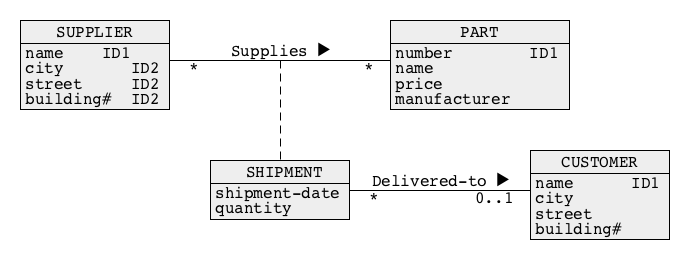

Logical Design
Outline
Methodology
- The logical design transforms a conceptual schema into a set of relational schemas
- The logical design is performed as a sequence of the following steps:
- (1) The multivalued attributes are replaced with the classes of objects and depending on the semantics of multivalued attribute either with one-to-many or many-to-many associations
- (2) The associaton classes and link attributes are replaced with the triples (one-to-many association:class-of-objects :many-to-one-association)
- (3) Many-to-many associations are replaced with triples (one-to-many association:class-of-objects:many-to-one association)
- (4) The qualifications are replaced with one-to-many associations and composite identifiers in object classes on "many" side of one-to-many associations
Methodology
- (5) The selected identifiers are copied from the classes of objects on "one" sides of association to the classes of objects on "many" side of the associationds and such identifierds are tagged with FKn tag (an index "n" is used to distinguish between different foreign keys)
- (6) The triples (class-of-objects:one-to-one asociation:class of objects) are merged into one class of objects and one-to-one associations are removed
- (7) The superset, subset and association methods are used to transform the generalizations
- (8) The primary and candidate keys are created
- (9) The associations are removed
- (10) The relational schemas with the referential integrity constraints are created
Logical Design
Outline
Multivalued attributes
- Case 1: Transformation into a class of objects and many-to-many association
- A multivalued attribute author-name in a class of objects BOOK is transformed in the following way:
- An attribute author-name is promoted to a class of objects AUTHOR (such step is called as reification)
- A single valued attribute author-name is added as an identifier to a class AUTHOR
- A multivalued attribute author-name is removed from a class BOOK
- A many-to-many association Is-written-by is created between the classes BOOK and AUTHOR

Multivalued attributes
- An association Is-written-by is many-to-many because a book can be written by many authors and an author can write many books

Multivalued attributes
- Case 2: Transformation into a class of objects and one-to-many association
- A multivalued attribute phone-number in a class of objects PERSON is transformed in the following way:
- An attribute phone-number is promoted to a class of objects PHONE (such step is called as reification)
- A single valued attribute number is added as an identifier to a class PHONE
- A multivalued attribute phone-number is removed from a class PERSON
- A one-to-many association Has is created between the classes PERSON and PHONE

Multivalued attributes
- An association Has is one-to-many because a person can have many mobile phones and a mobile phone is owned by one person

Association classes
- An association class Enrols is transformed in the following way:
- Many-to-many association Enrols is removed
- A one-to-many association Performs is added between a class STUDENT and a class ENROLMENT
- A one-to-many association Is-involved-in is added between a class SUBJECT and a class ENROLMENT
- A qualification with an attribute code is added on a STUDENT side of association Performs and a qualification with an attribute s# is added on SUBJECT side of association Is-involved-in
Association classes
- A qualification with an attribute code of an association Performs contributes to an identifier (s#, code) of a class ENROLMENT
- A qualification with an attribute s# of an association Is-involved-in also contributes to an identifier (s#, code) of a class ENROLMENT
Qualified association classess

- An association class Enrols qualified with an attribute edate is transformed in the following way:
- Many-to-many association Enrols is removed
- A one-to-many association Performs is added between a class STUDENT and a class ENROLMENT
- A one-to-many association Is-involved-in is added between a class SUBJECT and a class ENROLMENT
- A qualification with the attributes (code,edate) is added on STUDENT side of association Performs and a qualification with the attributes (s#,edate) is added on SUBJECT side of association Is-involved-in
Qualified association classes
- An attribute edate is removed from a class ENROLMENT
Link attributes
- A link attribute edate is transformed in the following way:
- A link attribute edate is promoted to an association class ENROLMENT
- An association class ENROLMENT is transformed in a way explained earlier

Many-to-many associations

- A many-to-many association Supplies is transformed in the following way:
- A new class of objects SHIPMENT is created
- A one-to-many association Performs is added between a class SUPPLIER and a class SHIPMENT
- A one-to-many association Is-involved-in is added between a class PART and a class SHIPMENT
- A qualification with the attributes (p#) is added on SUPPLIER side of association Performs and a qualification with the attributes (s#) is added on PART side of association Is-involved-in
Many-to-many associations
- A qualification with an attribute p# of an association Performs contributes to an identifier (p#, s#) of a class SHIPMENT
- A qualification with an attribute s# of an association Is-involved-in also contributes to an identifier (p#, s#) of a class SHIPMENT

Qualifications

- A qualification with the attribute room# is transformed in the following way:
- The attributes (bldg#, room#) are copied to a class ROOM
- A pair of attributes (bldg#, room#) is tagged with IDn in a class ROOM (it becomes an identifier)
- An attribute bldg# is tagged with FKn to denote a foreign key referencing an identifier bldg# in a class BUILDING
- A multiplicity on a class ROOM side of qualified association has is changed to * or 1..*
- A qualification with an attribute room# is removed
Qualifications
- The attributes (bldg#, room#) form an identifier of a class ROOM
- A attribute bldg# becomes a foreign key referencing an attribute bldg# in a class BUILDING

Qualifications

- A double qualification with the attributes (code, edate) and (s#, edate) is transformed in the following way:
- The attributes (code, edate) and the attributes (s#, edate) are copied to a class ENROLMENT
- A triple of attributes (code, s#, edate) is tagged with IDn in a class ENROLMENT (it becomes an identifier)
- An attribute code is tagged with FKn to denote a foreign key referencing an identifier code in a class SUBJECT
- An attribute s# is tagged with FKm (where n <>m) to denote a foreign key referencing an identifier s# in a class STUDENT
- Both 0..1 multiplicities on the left and right side of a class ENROLMENT are changed to * or 1..*
Qualifications
-
- Both qualifications with the attributes (code, edate) and (s#, edate) are removed

Foreign keys
- Foreign keys are created in the following way:
- An identifier (bldg#, room#) from "one" side of an association Is-located-in is copied to a class EQUIPMENT on "many" side of the association
- A pair of attributes (bldg#, room#) is tagged with FKn in a class EQUIPMENT (it becomes a composite foreign key) referencing (bldg#, room#) in a class ROOM
One-to-one associations

- One-to-one associations are transformed in the following way:
- A triple (CHAIRMAN:Is-head-of:SCHOOL) is merged into one class of objects SCHOOL
- The attributes (emp#, first-name, last-name, dob) that come from an optional 0..1 side of association Is-head-of are tagged with [0..1] as optional attributes
- An attribute like name, that was an identifier of a class on mandatory side (1..1) of and association obtains a tag IDn
- An attribute like emp#, that was an identifier of a class on an optional side of association obtains a tag CKn
- One-to-one association is removed
One-to-one associations
- Note, that a candidate key emp# may have no value, it means, that it can be NULL

Generalizations - superset method
- A superset method transforms entire generalization hierarchy into a single class of objects in the following way:
- All attributes from the classes of objects at the lowest level of generalization hierarchy are copied to an immediate higher level and become optional attributes ([0..1] tag) there, e.g. the attributes project and thesis are copied from the classes UNDERGRADUATE-STUDENT and POSTGRADUATE-STUDENT to a class STUDENT
- An attribute type-of-superclass is added to a superclass, e.g. and attribute type-of-students is added to a class STUDENT
Generalizations - superset method
-
- All classes at the lowest level are removed
- The steps above are repeated until only one class of objects is left

Generalizations - subset method

- A subset method transforms entire generalization hierarchy into a number of classes of objects in the following way:
- All attributes from the classes of objects at the higher levels of generalization hierarchy are copied to the classes of objects at the lowest levels of generalization hierarchy e.g. the attributes s# and first-name last-name, dob are copied from a class STUDENT to the classes POSTGRADUATE-STUDENT and UNDERGRADUATE-STUDENT
Generalizations - subset method
-
- All classes of objects except those at the lowest levels of generalization hierachy are removed, e.g. a class STUDENT is removed
Generalizations - association method

- An association method transforms entire generalization hierarchy into a number of classes of objects in the following way:
- One of the identifiers from a superclass is copied to subclasses one level below a superclass, e.g. an attribute s# is copied from a class STUDENT to the classes UNDEGRADUATE-STUDENT and POSTGRADUATE-STUDENT
- The copied identifier obtains a tag FKn in the subclasses
Generalizations - association method
-
- A generalization level is removed from a diagram

Primary keys and candidate keys

- primary keys and candidate keys are created in the following way:
- In each class one of the identifiers (identifier or composite identifier), e.g. s# attribute is tagged with PK tag
- All other identifiers like ssno, (first-name, last-name, dob) are tagged with Ckn tags

Associations
- In this step association are eliminated and FKn tags are extended with REFERENCE clauses in the following way:
- Each time "on-to-many" association is removed a respective FKn tag is extended with REFERENCE clause refering PKn on the other side of the removed association, for example when an association Is-located-in is removed FK1:(bldg#, room#) is extened with a clause REFERENCES ROOM(blgd#, room#)

Relational schemas

- In the final step the relational schemas are created in the following way:
- A relational schema is created from each object class left such that in each class the attributes tagged with PKn become a primary key, the attributes tagged with CKn become a candidate key and attributes tagged with FKn become a foreign key
ROOM(bldg#, room#, area) PRIMARY KEY = (bldg#, room#)
EQUIPMENT(serialnum, name, installation-date, bldg#, room#) PRIMARY KEY = (serialnum) FOREIGN KEY = (bldg#, room#) REFERENCES ROOM(bldg#, room#)
Logical Design
Outline
Example
- The following conceptual schema represents a simple database domain that contains information about parts, customers, orders submitted by customers, contents of each order, suppliers and parts shipped by suppliers
- First, we transform multivalued attributes
Example - multivalued attributes
- The following conceptual schema is obtained after transformation of multivalued attributes
- Next, we transform association classes and link attributes

Example - Association classes and link attributes
- The following conceptual schema is obtained after transformation of association classes
- Next, we transform many-to-many associations

Example - Many-to-many associations
- The following conceptual schema is obtained after transformation of many-to-many-associations
- Next, we transform qualifications

Example - Qualifications
- The following conceptual schema is obtained after transformation of qualifications
- Next, we create foreign keys

Example - Foreign keys
- The following conceptual schema is obtained after creation of foreign keys
- Next, we transform one-to-one asociations
Example - One-to-one associations
- The following conceptual schema is obtained after transformation of one-to-one associations
- Next, we transform generalizations

Example - Generalizations
- The following conceptual schema is obtained after transformation of generalizations with an association method
- Next, we create primary keys and candidate keys

Example - Primary keys and Candidate keys
- The following conceptual schema is obtained after creation of primary keys and candidate keys
- Next, we transform associations
Example - Associations
- The following conceptual schema is obtained after transformation of associations
- Next, we create relational schemas

Example - Relational schemas (1)
- At the end we obtain the following collection of relational schemas:
CUSTOMER(name, phone, address) PRIMARY KEY = (phone)
FREQUENT-CUSTOMER(phone, points) PRIMARY KEY = (phone) FOREIGN KEY = (phone) REFERENCES CUSTOMER(phone)
ORDERS(order#, odate, phone) PRIMARY KEY = (order#) FOREIGN KEY = (phone) REFERENCES CUSTOMER(phone)
SUPPLIER(sname, fax) PRIMARY KEY = (sname)
PHONE(number, sname) PRIMARY KEY = (number) FOREIGN KEY = (sname) REFERENCES SUPPLIER(sname)
Example - Relational schemas (2)
- At the end we obtain the following collection of relational schemas:
PART(p#, name, price) PRIMARY KEY = (p#)
PART-SHIPPED-BY(sname, p#, shipment-date) PRIMARY KEY = (sname, p#, shipment-date) FOREIGN KEY1 = (sname) REFERENCES SUPPLIER(sname) FOREIGN KEY2 = (p#) REFERENCES PART(p#)
LINEITEM(order#, line#, sname, p#, shipment-date) PRIMARY KEY = (order#, line#) FOREIGN KEY1 = (order#) REFERENCES ORDER(order#) FOREIGN KEY2 = (sname, p#, shipment-date) REFERENCES PART-SHIPPED-BY(sname, p#, shipment-date)
References
- C. Coronel, S. Morris, A. Basta, M. Zgola, Data Management and Security, Chapter 2 Cengage Compose eBook, 2018, eBook: Data Management and Security, 1st Edition
- T. Connoly, C. Begg, Database Systems, A Practical Approach to Design, Implementation, and Management, Chapter 17 Methodology - Logical Database Design for the Relational Model, Pearson Education Ltd, 2015